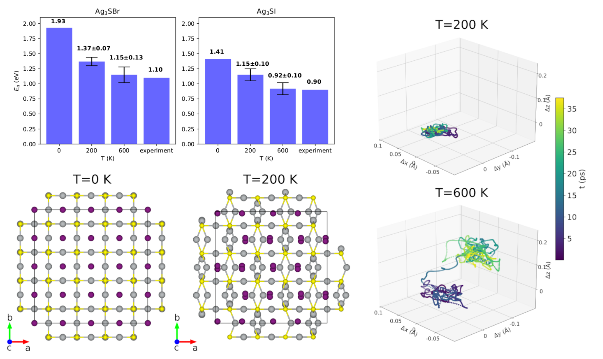

Research
PhD research
Anharmonic materials for energy applications
The main research topic in my PhD is to characterize the structural, optoelectronic, and thermal properties of chalcohalide anti-perovskites. These are materials that are being poorly studied and that are expected to be interesting for energy applications, due their optoelectronic and thermoelectric properties. These materials present important electron-phonon and phonon-phonon interactions, arising interesting physical behaviour such as structural stabilization with temperature or massive band gap decreasing.
Crystal structure prediction with ML interatomic potentials
The structure of the unit cell in crystal materials and the type of ions present in this unit cell fully determines
the physical and chemical properties of a given material. Thus, we were interested in be able to find crystal structures
for a given chemical compounds and stoichiometry with ab-ininio methods, what is called Crystal Structure Prediction (CSP).
However this is a complicated problem, and despite there are different methodologies for CSP, they usually
take long frames of time and need to be executed in supercomputer facilities.
PyMCSP implements machine learning interatomic potentials and random search algorithms, in order
to be able to find good structure candidates in small frames of time and in a personal computer.
The github repository to PyMCSP code can be found
here.